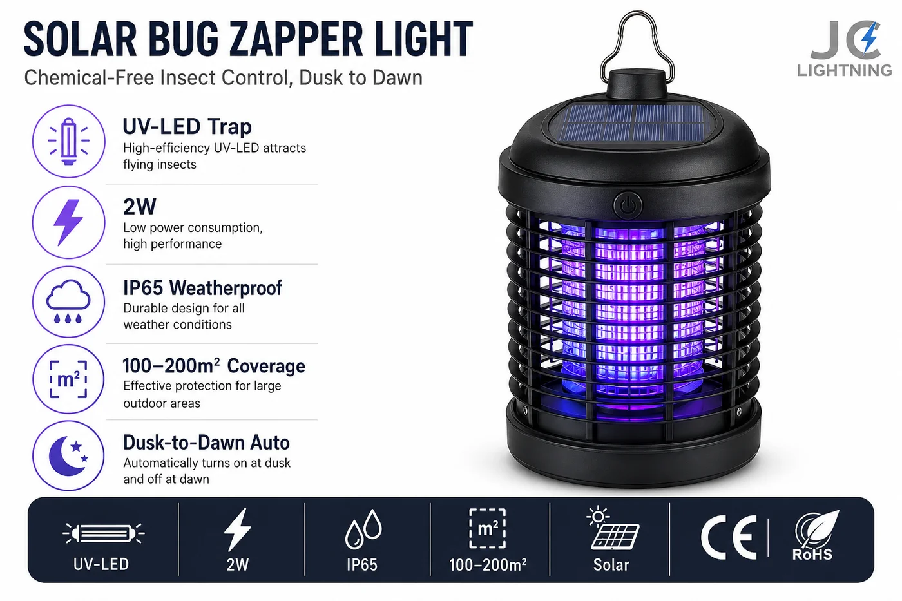

太阳能灭蚊灯
用于户外区域的太阳能 UV-LED 灭蚊灭虫灯——2W,IP65,覆盖 100–200m²,黄昏到黎明自动运行。

在多蚊市场里这是轻松的加购品。UV-LED 诱来昆虫并在 100–200m² 范围内灭杀,每晚靠太阳能自动运行——无化学品、无插头、无需更换药剂。IP65 密封让它全年居于户外。它是安防与花园系列的天然搭配品,为经销商和零售商提升客单。
规格参数
| 类型 | UV-LED 灭蚊灭虫灯 |
|---|---|
| 功率 | 2W |
| IP 防护等级 | IP65 |
| 覆盖范围 | 100–200 m² |
| 运行 | 黄昏到黎明自动 |
| 充电 | 太阳能 |
| 认证 | CE + RoHS |
| 定制 | OEM / ODM——包装、品牌 |
为什么选它
无化学灭虫。UV-LED 灭杀蚊虫,无需喷雾或药剂。
自动且太阳能。黄昏到黎明运行,无插头、无运行成本。
轻松加购。花园与安防照明的天然搭配,提升客单。
已认证、支持 OEM。每份报价附 CE + RoHS;可定制包装与品牌。
为这些市场而建撒哈拉以南非洲、拉美、东南亚和大洋洲的多蚊地区——任何户外照明系列的轻松加购品。